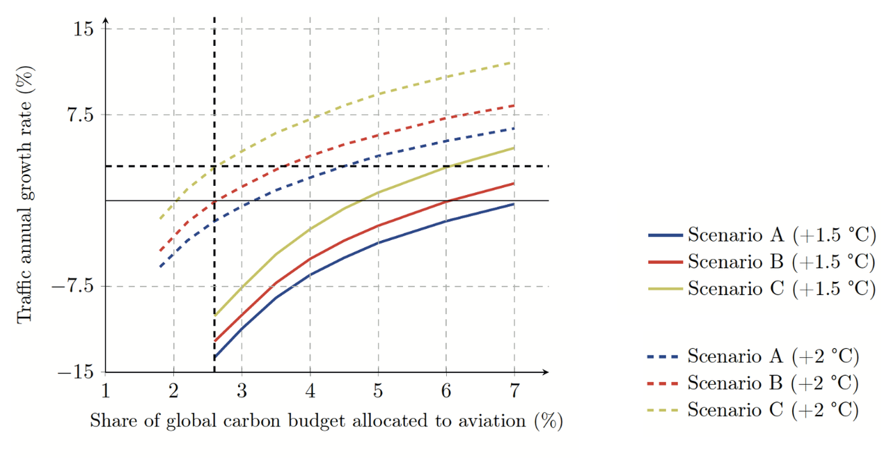

Other interesting works
We are not the only ones interested in energy-climate issues for aviation, space, or other human activities, and that's a good thing! Here, you will find a list of publications that inspire, challenge , or sometimes mentione us. As the French say, we invite you to look elsewhere to see if we are there!
|
|
Report on the aviation sector
(Pour un réveil écologique, March 2024)
-
With this new report on the aviation industry, the PRE ("Pour un réveil écologique", literally "For an ecological awakening") association challenges, with the energy and style that we know it for, the aviation sector regarding its response to the challenge of climate change. While advancements are acknowledged, the main criticism levied against it is that of 'technosolutionism'. This barbaric neologism conveys the idea that technological innovation alone would be sufficient to solve the problem. While this 'technosolutionism' may sound like a reproach to some, the technological approach shapes the discourse and actions of others, driven by the spirit of aviation pioneers, capable of surpassing themselves and succeeding where the majority gives up. Thus, when civil society and scientists raise alarms about climate change and the impact of aviation, aircraft manufacturers respond with a new plane and carriers promise to revolutionize transportation.
Unfortunately, the nature and scope of the problem we face mean that these responses, even if ambitious, pose significant risks to climate objectives, as well as to the sector's own ability to survive in a world plagued by climate and energy-related instabilities. Moreover, and above all, the promise of a total decarbonizing technological solution avoids societal questioning, personal and collective reflection on the uses and possibilities of inhabiting the world without its unlimited energy-material package at hand. The less we envisage this situation, the more we will suffer it. What is at stake, for the aviation sector as for each of us, is the ability to broaden our view and actions beyond our personal and immediate interests, it is our ability to challenge the patterns that have allowed us to develop so far, but which can no longer function with finite resources. Awareness of planetary boundaries calls us to transition from adolescence to an energy-adult age, with its limitations, but also its new possibilities. Initiating such a shift in strategic positioning is a real challenge, but the storm is announced straight ahead, and the alarms continue to flash. This is where the path must be opened, where everything is to be invented, with courage, determination, and humanism, that is to say, in the spirit of aviation pioneers. "To be a man is precisely to be responsible. It is to feel shame in the face of a misery that seems to be independent of oneself. It is to be proud of a victory that one's comrades have achieved. It is to feel, while laying one's stone, that one is contributing to building the world." Terre des Hommes, translation from A. de Saint-Exupéry. Access the report |

|
Le Plan de Transformation de l'Economie Francaise
(The Shift Project, first publication in January 2022)
+
Major project of the Shift Project, the "Plan de Transformation de l'Economie Francaise" (PTEF), literally French Economic Transformation Plan, aims to propose pragmatic pathways to decarbonize the economy, sector by sector, while promoting resilience and employment.
Initiated at the beginning of the first lockdown, this plan is part of the perspective of the famous "world after", and aims to fuel public debate. The goal is to design a large-scale plan, a systemic program of operational measures (fiscal, regulatory, economic, social, organizational) intended to effectively make the French economy compatible with the 2°C limit now commonly adopted as an objective. The long-distance mobility sector is of course addressed in the report Voyager bas carbone. Access the PTEF. |
|
ISAE-SUPAERO, Aviation and climate, a literature review
(Scott Delbecq, Jérôme Fontane, Nicolas Gourdain, Hugo Mugnier et Thomas Planès, September 2021)
+
Published a few months later, the Aviation and climate, a literature review report provides academic confirmation of the analysis and modeling methodology used in Flying in 2050, particularly the approach by cumulative emissions & carbon budget.
However, rather than considering a carbon budget as a working hypothesis and deducing the possible traffic growth according to technological scenarios (+2.5% for the "Maverick" scenario and -0.8% for the "Iceman" global scenario in Flying in 2050), the A&C review proposes to look at the sensitivity of traffic growth permitted according to a given carbon budget, which thus becomes an input variable of the model rather than a working hypothesis. This approach allows for the production of the following very interesting curves:

Thus, if the A&C review does not take a carbon budget hypothesis, if the technological scenarios are not exactly equivalent to "Maverick" and "Iceman", the results obtained are consistent with and confirm those of Flying in 2050. Furthermore, the physical analysis of decarbonizing technologies is much more in-depth. Thus, if the reader has some knowledge in aeronautical engineering, this high-quality work constitutes an exciting mine of learning and reflection.
Some AERO DECARBO members have had the privilege of studying at ISAE-SUPAERO. This work and positioning honor it, touch us and, hopefully, will allow for an even wider dissemination of the factual and scientific approach to the challenges and risks that the aviation sector will have to face in a world undergoing profound change. Access the report |
|